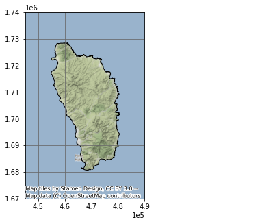
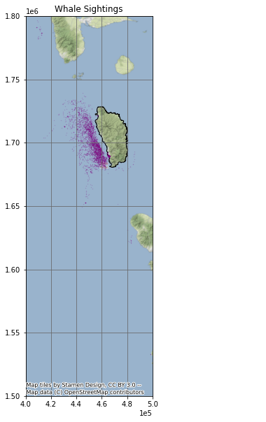
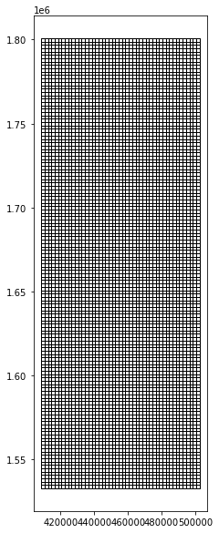
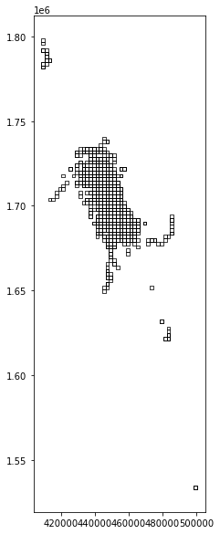
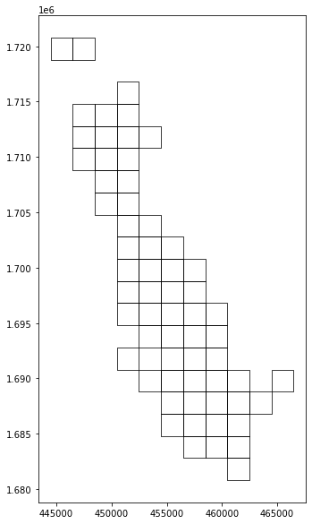
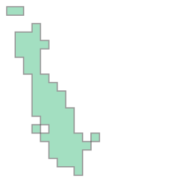
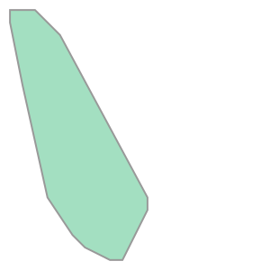
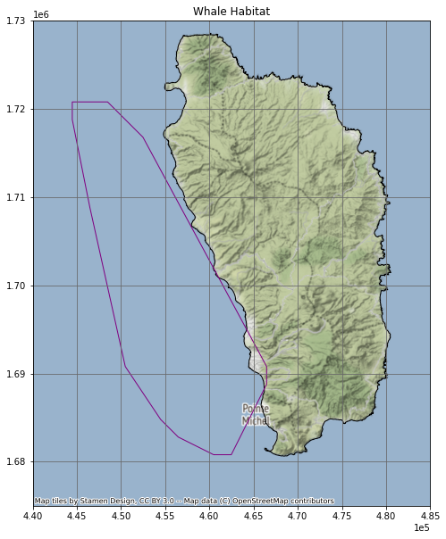
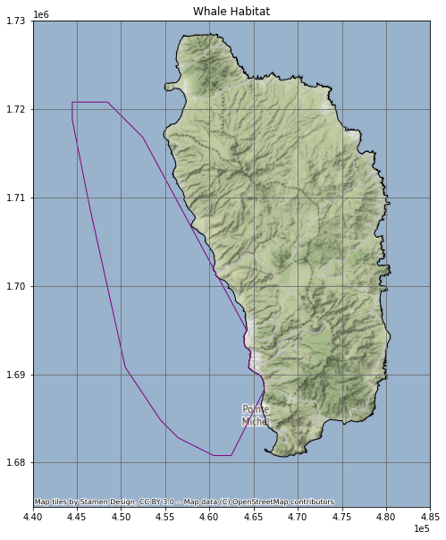
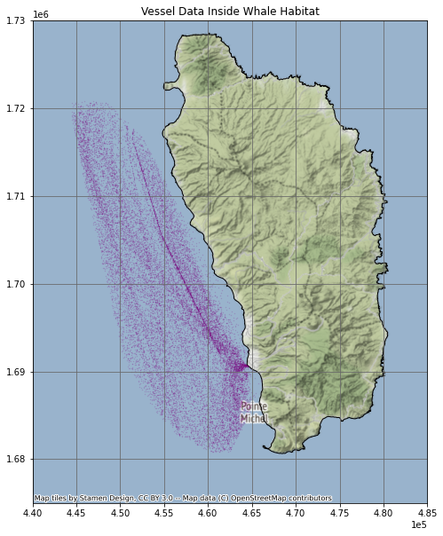

Setup
Import Modules
import geopandas as gpd
import rasterio as rio
from rasterio.plot import show
import numpy as np
import pandas as pd
import matplotlib.image as mpimg
import matplotlib.pyplot as plt
import os
import glob
import contextily as ctx
import shapely
from shapely.geometry import Polygon
%matplotlib inlineSet Parameters and constants
shoreline_shapefile = 'data/dominica/dma_admn_adm0_py_s1_dominode_v2.shp'
whales_CSV = 'data/sightings2005_2018.csv'
vessels_CSV = 'data/station1249.csv'
ten_kn_in_ms = 5.14
projected_EPSG = 2002 # Dominica 1945 / British West Indies Grid
geodetic_EPSG = 4326 # WGS 84 (use as default CRS for incoming latlon)Load Data
Dominica Shape File
dominica_shp = gpd.read_file(shoreline_shapefile)
dominica_shp.head()| ADM0_PCODE | ADM0_EN | geometry | |
|---|---|---|---|
| 0 | DM | Dominica | POLYGON ((-61.43023 15.63952, -61.43019 15.639… |
Set CRS to EPSG 2002
dominica_shp = dominica_shp.to_crs(projected_EPSG)
dominica_shp.crs<Projected CRS: EPSG:2002>
Name: Dominica 1945 / British West Indies Grid
Axis Info [cartesian]:
- E[east]: Easting (metre)
- N[north]: Northing (metre)
Area of Use:
- name: Dominica - onshore.
- bounds: (-61.55, 15.14, -61.2, 15.69)
Coordinate Operation:
- name: British West Indies Grid
- method: Transverse Mercator
Datum: Dominica 1945
- Ellipsoid: Clarke 1880 (RGS)
- Prime Meridian: GreenwichPlot Dominica
fig, ax = plt.subplots(figsize=(5, 5))
ax.grid(True, color = 'dimgray')
ax.set(ylim=(1.67e6,1.74e6), xlim=(445000, 490000))
ax.ticklabel_format(scilimits = [-5, 5])
dominica_shp.plot(ax = ax, edgecolor = "k", facecolor="None")
ctx.add_basemap(ax, crs=projected_EPSG)
Load Data
Whale Sightings
whales = gpd.read_file(whales_CSV)
whales| field_1 | GPStime | Lat | Long | geometry | |
|---|---|---|---|---|---|
| 0 | 0 | 2005-01-15 07:43:27 | 15.36977117 | -61.49328433 | None |
| 1 | 1 | 2005-01-15 08:07:13 | 15.3834075 | -61.503702 | None |
| 2 | 2 | 2005-01-15 08:31:17 | 15.38106333 | -61.50486067 | None |
| 3 | 3 | 2005-01-15 09:19:10 | 15.33532083 | -61.46858117 | None |
| 4 | 4 | 2005-01-15 10:08:00 | 15.294224 | -61.45318517 | None |
| … | … | … | … | … | … |
| 4888 | 4888 | 2018-05-25 12:01:25 | 15.39195 | -61.572 | None |
| 4889 | 4889 | 2018-05-25 13:08:29 | 15.4189 | -61.5833 | None |
| 4890 | 4890 | 2018-05-25 14:50:00 | 15.443483 | -61.60995 | None |
| 4891 | 4891 | 2018-05-25 15:57:34 | 15.499866 | -61.638333 | None |
| 4892 | 4892 | 2018-05-25 16:17:10 | 15.494783 | -61.6482 | None |
4893 rows × 5 columns
Create GeoDataFrame
points = gpd.points_from_xy(whales['Long'], whales['Lat'], crs = geodetic_EPSG)
whales_gdf = gpd.GeoDataFrame(whales, geometry = points)
whales_gdf = whales_gdf.to_crs(projected_EPSG)Plot Whale Sightings
fig, ax = plt.subplots(figsize = (10, 10))
ax.set_aspect('equal')
ax.grid(True, color = 'dimgray')
ax.set(xlim=(4e5, 5e5), ylim=(1.5e6, 1.8e6))
dominica_shp.plot(ax = ax, color='None', edgecolor = "k")
whales_gdf.plot(ax = ax, markersize = .1, color = "purple", alpha = .25)
ax.set_title('Whale Sightings', fontsize=12)
ax.ticklabel_format(scilimits = [-5, 5])
ctx.add_basemap(ax, crs = projected_EPSG)
Create Grid
xmin, ymin, xmax, ymax = whales_gdf.total_bounds
cell_size = 2000
xs = list(np.arange(xmin, xmax + cell_size, cell_size))
ys = list(np.arange(ymin, ymax + cell_size, cell_size))
def make_cell(x, y, cell_size):
ring = [
(x, y),
(x + cell_size, y),
(x + cell_size, y + cell_size),
(x, y + cell_size)
]
cell = shapely.geometry.Polygon(ring)
return cell
cells = []
for x in xs:
for y in ys:
cell = make_cell(x, y, cell_size)
cells.append(cell)
grid = gpd.GeoDataFrame({'geometry': cells}, crs = geodetic_EPSG)
grid = grid.set_geometry(crs = projected_EPSG, col = grid['geometry'])Plot Grid
grid.plot(facecolor = "none", figsize = (10, 10), linewidth = 1)<AxesSubplot:>
Extract Whale Habitat
whale_grid = grid.sjoin(whales_gdf, how="inner")Plot whale sighting grid cells
whale_grid.plot(facecolor = "none", figsize = (10, 10), linewidth = .75)<AxesSubplot:>
Summarise Whale Counts
grid['count'] = whale_grid.groupby(whale_grid.index).count()['index_right']
grid = grid[grid['count'] > 20]Plot Whale Habitat
grid.plot(facecolor = "none", figsize = (10, 10), linewidth = .75)<AxesSubplot:>
Create Unary Union
grid_union = grid.unary_union
grid_union
Create Vessel Speed Reduction Zone
The vessel speed reduction zone is determined by the whale habitat areas in which more than 20 whales were observed per 2,000 m².
grid_convex = grid_union.convex_hull
grid_convex
Make GeoDataFrame
whale_habitat = gpd.GeoDataFrame(index = [0], geometry = [grid_convex], crs = projected_EPSG)Plot
fig, ax = plt.subplots(figsize = (10, 10))
ax.grid(True, color = 'dimgray')
ax.set(xlim=(4.4e5, 4.85e5), ylim=(1.675e6, 1.73e6))
dominica_shp.plot(ax = ax, color='None', edgecolor = "k")
whale_habitat.plot(ax = ax, edgecolor = "purple", facecolor = 'none')
ax.set_title('Whale Habitat', fontsize=12)
ax.ticklabel_format(scilimits = [-5, 5])
ctx.add_basemap(ax, crs = projected_EPSG)
whale_habitat_diff = whale_habitat.difference(dominica_shp)
whale_habitat = gpd.GeoDataFrame(geometry = whale_habitat_diff)
whale_habitat| geometry | |
|---|---|
| 0 | POLYGON ((456480.652 1682792.746, 454480.652 1… |
fig, ax = plt.subplots(figsize = (10, 10))
ax.grid(True, color = 'dimgray')
ax.set(xlim=(4.4e5, 4.85e5), ylim=(1.675e6, 1.73e6))
dominica_shp.plot(ax = ax, color='None', edgecolor = "k")
whale_habitat.plot(ax = ax, edgecolor = "purple", facecolor = 'none')
ax.set_title('Whale Habitat', fontsize=12)
ax.ticklabel_format(scilimits = [-5, 5])
ctx.add_basemap(ax, crs = projected_EPSG)
whale_habitat| geometry | |
|---|---|
| 0 | POLYGON ((456480.652 1682792.746, 454480.652 1… |
Load AIS Vessel Data
vessels = gpd.read_file(vessels_CSV)
points = gpd.points_from_xy(vessels['LON'], vessels['LAT'], crs = geodetic_EPSG)
vessels_gdf = gpd.GeoDataFrame(vessels, geometry = points)
vessels_gdf = vessels_gdf.to_crs(projected_EPSG)
vessels_gdf['TIMESTAMP'] = pd.to_datetime(vessels_gdf['TIMESTAMP'])
vessels_gdf| field_1 | MMSI | LON | LAT | TIMESTAMP | geometry | |
|---|---|---|---|---|---|---|
| 0 | 0 | 233092000 | -61.84788 | 15.23238 | 2015-05-22 13:53:26 | POINT (-61.84788 15.23238) |
| 1 | 1 | 255803280 | -61.74397 | 15.96114 | 2015-05-22 13:52:57 | POINT (-61.74397 15.96114) |
| 2 | 2 | 329002300 | -61.38968 | 15.29744 | 2015-05-22 13:52:32 | POINT (-61.38968 15.29744) |
| 3 | 3 | 257674000 | -61.54395 | 16.2334 | 2015-05-22 13:52:24 | POINT (-61.54395 16.23340) |
| 4 | 4 | 636092006 | -61.52401 | 15.81954 | 2015-05-22 13:51:23 | POINT (-61.52401 15.81954) |
| … | … | … | … | … | … | … |
| 617257 | 238722 | 256525000 | -61.40679 | 15.36907 | 2015-05-21 21:34:59 | POINT (-61.40679 15.36907) |
| 617258 | 238723 | 311077100 | -61.37539 | 15.27406 | 2015-05-21 21:34:55 | POINT (-61.37539 15.27406) |
| 617259 | 238724 | 377907247 | -61.39461 | 15.30672 | 2015-05-21 21:34:46 | POINT (-61.39461 15.30672) |
| 617260 | 238725 | 253365000 | -61.49001 | 16.14007 | 2015-05-21 21:34:46 | POINT (-61.49001 16.14007) |
| 617261 | 238726 | 329002300 | -61.48073 | 15.44751 | 2015-05-21 21:34:45 | POINT (-61.48073 15.44751) |
617262 rows × 6 columns
Select Vessels Inside Whale Habitat
vessels_whale = vessels_gdf.sjoin(whale_habitat, how = 'inner')
vessels_whale| field_1 | MMSI | LON | LAT | TIMESTAMP | geometry | index_right | |
|---|---|---|---|---|---|---|---|
| 2 | 2 | 329002300 | -61.38968 | 15.29744 | 2015-05-22 13:52:32 | POINT (464555.392 1690588.725) | 0 |
| 7 | 7 | 338143127 | -61.39575 | 15.33418 | 2015-05-22 13:50:54 | POINT (463892.452 1694650.397) | 0 |
| 13 | 13 | 329002300 | -61.38968 | 15.29745 | 2015-05-22 13:48:32 | POINT (464555.389 1690589.831) | 0 |
| 15 | 15 | 338143015 | -61.39558 | 15.33423 | 2015-05-22 13:47:31 | POINT (463910.683 1694655.978) | 0 |
| 16 | 16 | 338143127 | -61.39757 | 15.33139 | 2015-05-22 13:47:25 | POINT (463697.964 1694341.275) | 0 |
| … | … | … | … | … | … | … | … |
| 617252 | 238717 | 329002300 | -61.4885 | 15.4706 | 2015-05-21 21:37:45 | POINT (453901.647 1709712.916) | 0 |
| 617253 | 238718 | 338143015 | -61.39553 | 15.33448 | 2015-05-21 21:37:14 | POINT (463915.972 1694683.643) | 0 |
| 617255 | 238720 | 338143127 | -61.39563 | 15.33468 | 2015-05-21 21:35:12 | POINT (463905.177 1694705.734) | 0 |
| 617259 | 238724 | 377907247 | -61.39461 | 15.30672 | 2015-05-21 21:34:46 | POINT (464023.288 1691613.624) | 0 |
| 617261 | 238726 | 329002300 | -61.48073 | 15.44751 | 2015-05-21 21:34:45 | POINT (454741.236 1707161.130) | 0 |
167402 rows × 7 columns
Plot Vessel Data
fig, ax = plt.subplots(figsize = (10, 10))
ax.grid(True, color = 'dimgray')
ax.set(xlim=(4.4e5, 4.85e5), ylim=(1.675e6, 1.73e6))
dominica_shp.plot(ax = ax, color='None', edgecolor = "k")
vessels_whale.plot(ax = ax, markersize = .1, color = "purple", alpha = .1)
ax.set_title('Vessel Data Inside Whale Habitat', fontsize=12)
ax.ticklabel_format(scilimits = [-5, 5])
ctx.add_basemap(ax, crs = projected_EPSG)
Calculate Vessel Speeds
vessels_whale_sorted = vessels_whale.sort_values(['MMSI', 'TIMESTAMP'])
vessels_whale_shifted = vessels_whale_sorted.shift(periods = 1)
vw_sorted_shifted = vessels_whale_sorted.join(vessels_whale_shifted, lsuffix = "_original", rsuffix = "_copy")
vw_matched = vw_sorted_shifted[vw_sorted_shifted['MMSI_original'] == vw_sorted_shifted['MMSI_copy']]
vw_matched = vw_matched.set_geometry(col = vw_matched['geometry_original'], crs = projected_EPSG)
vw_matched['distance_m'] = vw_matched['geometry_original'].distance(vw_matched['geometry_copy'])
vw_matched['time_s'] = vw_matched['TIMESTAMP_original'] - vw_matched['TIMESTAMP_copy']
vw_matched['time_s'] = vw_matched['time_s'].dt.total_seconds()
vw_matched['speed_ms'] = vw_matched['distance_m'] / vw_matched['time_s']
vw_matched['10_kn_time'] = vw_matched['distance_m'] / ten_kn_in_ms
vw_matched['time_diff'] = vw_matched['10_kn_time'].sub(vw_matched['time_s'])
vw_matched = vw_matched[vw_matched['time_diff'] > 0]Plot Vessels travelling over 10 knots
fig, ax = plt.subplots(figsize = (10, 10))
ax.grid(True, color = 'dimgray')
ax.set(xlim=(4.4e5, 4.85e5), ylim=(1.675e6, 1.73e6))
dominica_shp.plot(ax = ax, color='None', edgecolor = "k")
vw_matched.plot(ax = ax, markersize = .1, color = "purple", alpha = .25)
ax.set_title('Vessel Data Inside Whale Habitat', fontsize=12)
ax.ticklabel_format(scilimits = [-5, 5])
ctx.add_basemap(ax, crs = projected_EPSG)
Impact of a 10 knot Speed Reduction Zone
We calculated that ship vessel traffic would be slowed by 2 minutes per mile on average. Over the course of the year, this equated to approximately 28 days of increased shipping time.
num_days = vw_matched['time_diff'].sum() / 60 / 60 /24num_days27.9423247732646mean_time_lost = vw_matched['time_diff'].mean() / 60mean_time_lost1.8906563139508044